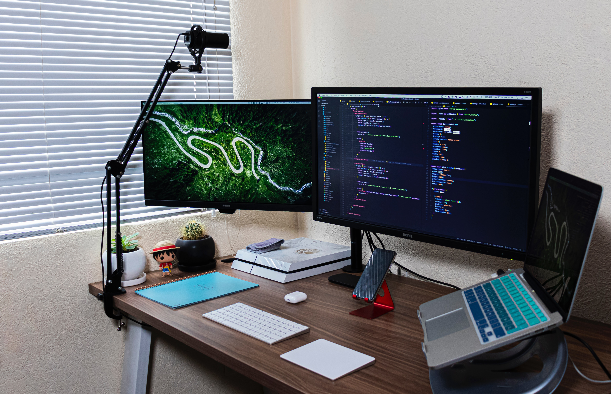

Home
About Me
Education
Contact
Portfolio
Check out some of my projects:
My GitHub
BI Mind Map for Credit Risk in Banking
Power BI Dashboard: Dynamic Yearly Sales Overview
Donation Data Analysis for the Acreditar Project with Looker Studio 📊 Dashboard: Acreditar Vision, Funds in Focus
Breast cancer prediction with the Breast Cancer Wisconsin (Diagnostic) Dataset – a classic in healthcare and AI studies.
